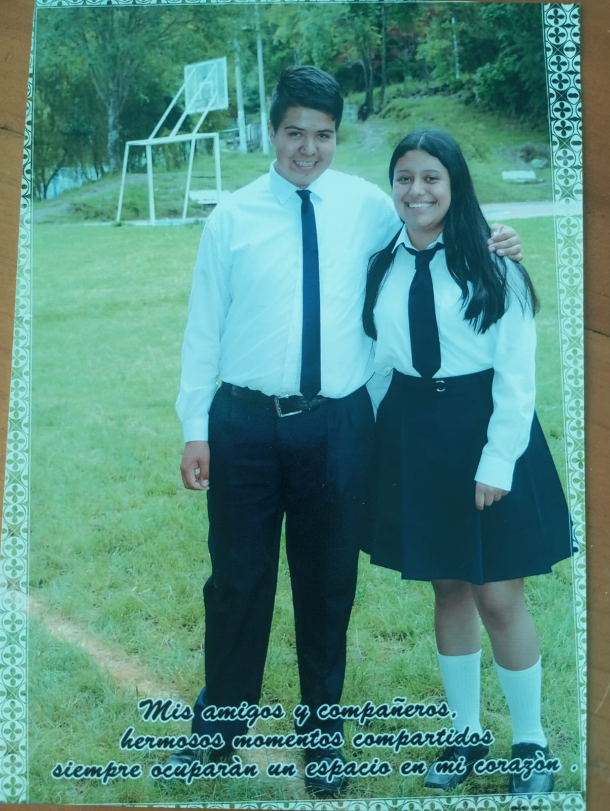
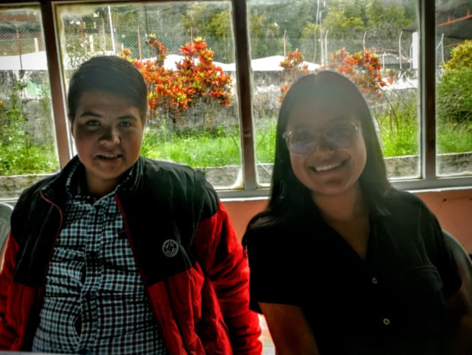
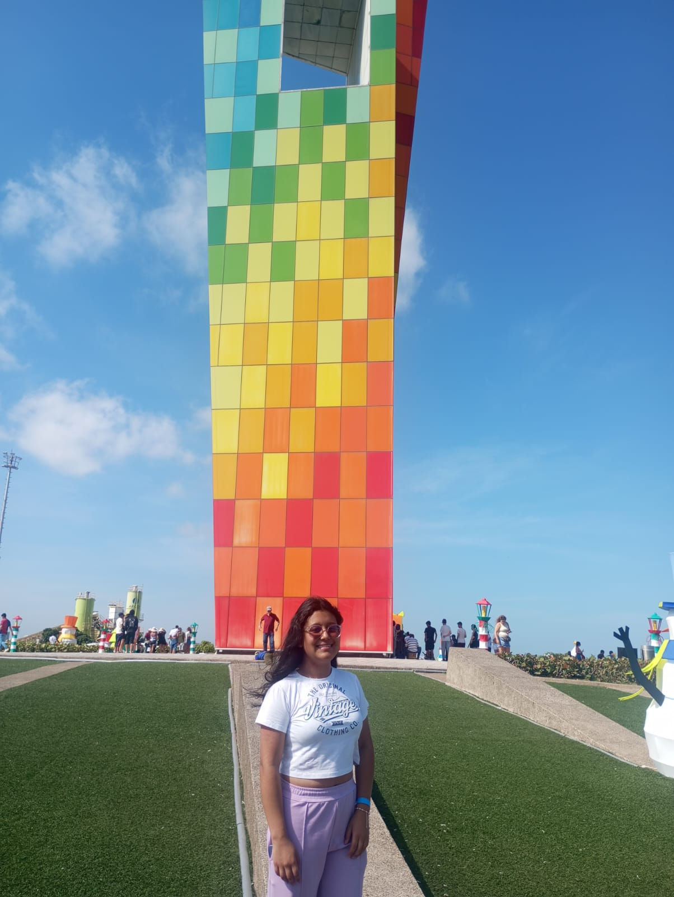

❤️ Una carta para Dexi 🌼
Para Dexi, mi amiga 🌼
Dexi:
Quise prepararte este pequeño espacio porque pronto empiezas una nueva etapa y quería que te llevaras un recordatorio de todo el cariño que te tengo.
Me da un poquito de tristeza pensar que te vas, pero también me alegra que vengan cosas nuevas para ti. Aunque estemos más lejos, la distancia no borra los buenos momentos ni el aprecio que siento por ti. Voy a estar deseándote lo mejor en cada paso.
Y como dentro de un mes llega tu cumpleaños, también quería adelantarte un abrazo enorme. Cuando llegue ese día, espero que esté lleno de alegría, momentos bonitos y todo lo que te haga feliz. ¡Ya habrá tiempo para celebrarlo como se debe! 🎂
Gracias por tu amistad. Te voy a extrañar y siempre podrás contar conmigo. ❤️



Con mucho cariño, Ronaldo ❤️
🌼 🌼 🌼